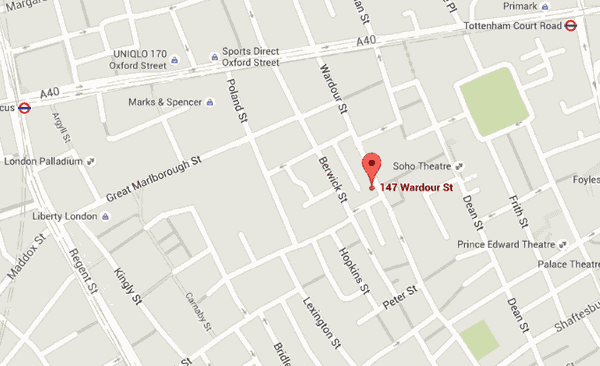

Accessible modal dialog pop-up iframe (v4)
Uses an anchor to launch a modal pop-up which is then populated with an iframe.
This version allows modal title and description to be user defined from the HTML.
CodePen demo: WCAG ARIA accessible pop-up iframe modal dialog (v4)
Production ready version (encapuslated with external configuration and instantiation): Modal Dialog demo.
Examples
As link: Wine bar location (interactive map)
As button:
As an image link: 
As an image:
In use
- Add attribute
data-modalto any link (best practice), or button, or tag (not recommended) to indicate "Launch in modal". - Give
data-modalthe url of theiframesrcif it's different to the linkhref. - The modal
titlemay be taken from the optional data attributedata-title="", or the link text, or the imagealttext. - The modal description may also be overriden by the data attribute
data-desc.
Example web page in a popup: webSemantics article (web page)
Caveats
- This method neither raises or lowers accessibility barriers caused by the
iframecontent. - Be absolutely certain the
iframedoesn't trap the keyboard.
Features
- WCAG 2 level AA with ARIA support
- Fully responsive, mobile-first approach.
- Lightweight, less than 1.8 KB to the browser with 1.5 KB CSS.
- When opening; the focus is moved to modal content.
- When closing; the focus is moved back to the activating link.
- While open; the Tab scope is limited to the modal content.
- While open; the document body is frozen (no scroll, no keychain).
- While open; the Esc key closes the modal while on any focusable object (but not while inside the
iframe). - All customisations are via inline HTML attributes and CSS.
No need to edit JavaScript. - Just a link is presented when JavaScript is unavailable.
Current status
14/08/2016 - In cross-browser, cross-platform and cross-device testing.
To be followed with full access testing by Digital Accessibility Centre.
Currently resolving modal width & height for a: Pop-up image
Video doesn't stop / pause on exit:
Pop-up YouTube video
Investigating…
In the meantime use this instead:
Button to embed video iframe (v2).
Based on the workings of:
- Greg Kraus: The incredible accessible modal window v3
- Marco Zehe: Accessible modal dialogs
- Heydonworks: Warning dialog
Alternatives
Let's mention alternate versions of modal pop-ups out there:
- Modaal - The best I've seen though kicks in at 17 KB. Does it all except allow for different link
hrefto a modaliframesrc (as per this example). If you need Accessibility with bells & whistles this is recommended. [Nicked some of your feature docs, thanks]. - Tingle js - Love the UX feel of this one but Accessibility not the strong point. Code weight (3 kb loaded) and a style I'm envious of. Appreciated the prototype technique over my purely functional. [Nicked the lightbox
cursor, thanks]. - Vanilla modal - Loved the lightweight (< 4 KB loaded inc CSS) simplicity, hated the modals loading before interaction, sadly ignores keyboard-only users too.
- DialogModal - Very basic modal dialog but with good Accessibility. Everything preloaded loaded in the HTML and uses ES2015.
- This version 4 (< 4 KB inc CSS). Uses
classListso limited to IE10+.
All in all nothing is ever perfect, just avoid using a heavy weight library / framework for something this simple.